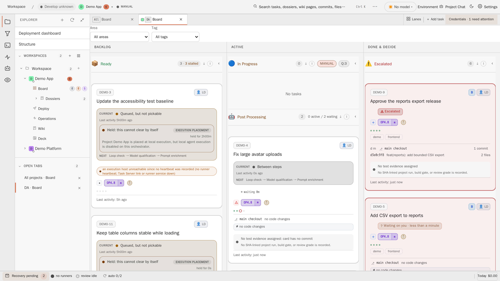
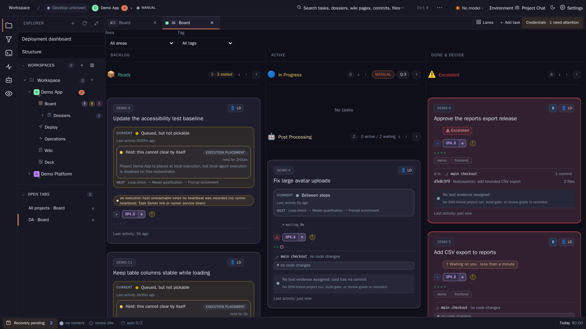
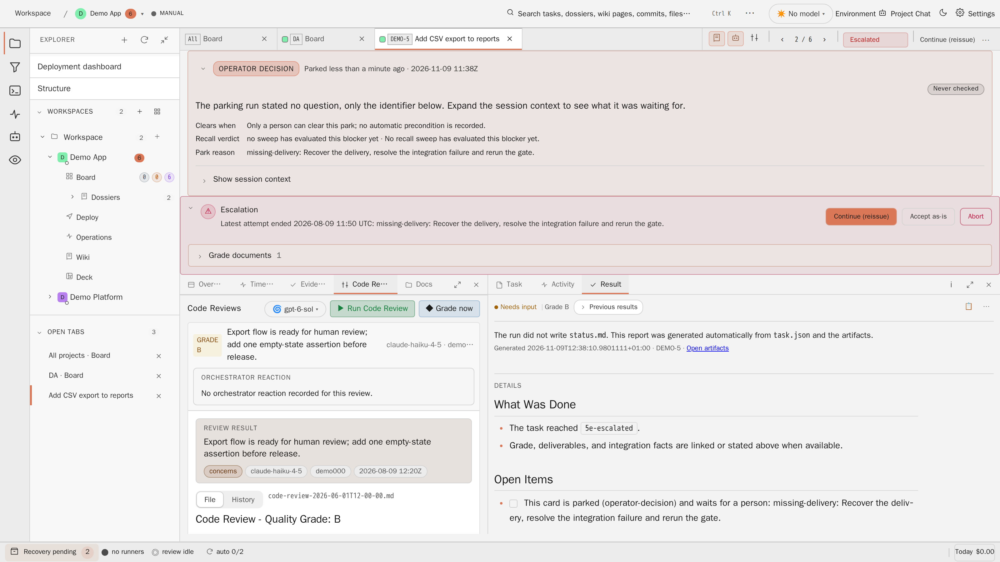
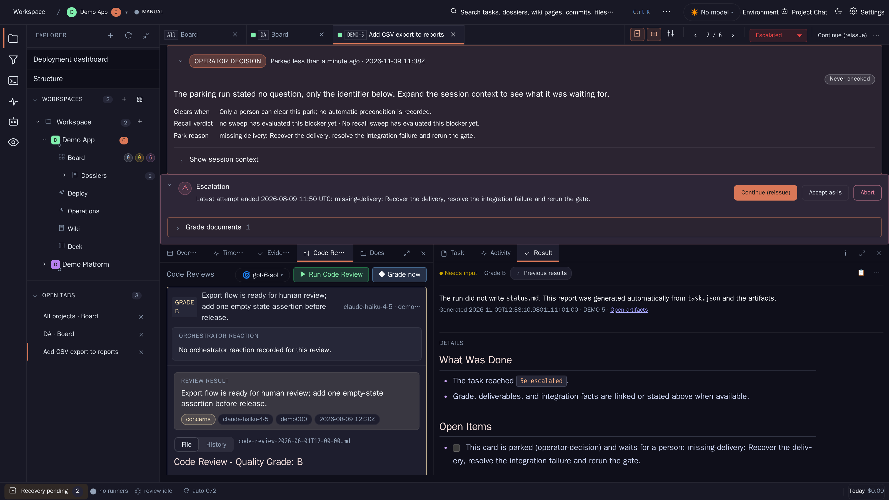
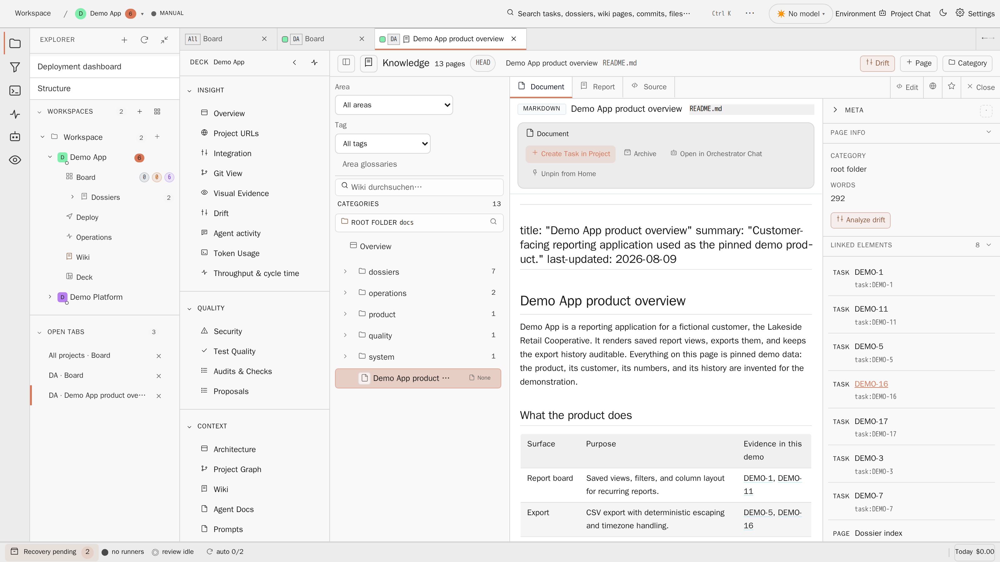
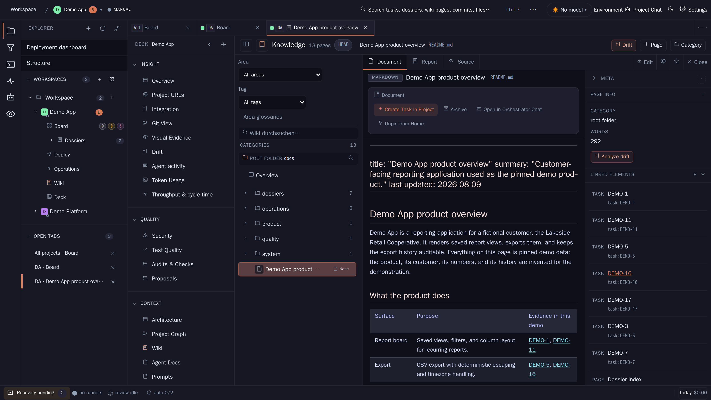

A. Essay only
Publish the reading as background and change nothing.
Cheap and harmless, but the readings that expose real gaps (coverage, absorption, persistent dangers) would stay unused.
Concept Dossier · AGT-3606 · 9 November 2026
Agent Studio is turning into an organisation. It has cards that produce more cards, observers that review other observers, personas with charters and budgets, managers that decide within grants, a weekly magazine and an owner who is both outside the system and its first decision premise. Niklas Luhmann's systems theory was built to describe exactly such arrangements: systems of communication that reproduce themselves through decisions, observe themselves through codes and describe themselves through their own media. This Dossier reads every major part of Agent Studio through that theory, separates what Luhmann says from what we infer, says where the analogy breaks, and derives fifteen design principles, each tied to an existing card or a draft card.
On 9 November 2026 the owner asked for a Dossier that relates everything Agent Studio is building to the body of thought of Niklas Luhmann (1927 to 1998). The request names the persona team with its stats, budgets, reporting obligations, feeds, managers and importance numbers, the magazine and the presenter (Dossier docs/persona-team/, AGT-3573), the global orchestrator sessions and the operator level (docs/operator-agent-level/, AGT-3462), cards, rounds and follow-up cards, review aspects and the batch gate, Dossiers and the Wiki, quotas and budgets, and the relation between the owner and the agents.
This is a concept. It changes no product code, configuration or existing document. It does three things:
workbench.json.The persona team Dossier was read from its result ref, because it was not yet on develop when this Dossier was written. It is cited by its slice ids PT-1 to PT-12. The owner's brief names the persona slices as AGT-3594 to AGT-3605. That range has twelve keys for twelve slices, so this Dossier assumes the order PT-1 = AGT-3594 through PT-12 = AGT-3605. The assumption is marked wherever a card key appears and must be checked against the card titles before a dependent card starts.
Read with Luhmann, Agent Studio is not a set of agents but a system of recorded decisions. Its elements are communications the platform accepts: lane moves, verdicts, receipts, Dossier revisions. Agents, models and the owner are its environment. The platform reaches them only through narrow couplings such as prompts, sentinels, tokens and grants. The board is a structure of expectations. Cards and follow-up cards are the way decisions reproduce decisions. Reviews and the batch gate are second-order observers with binary codes, and their criteria are the programmes that can change. Personas are observers with their own distinctions and blind spots. Managers and importance numbers absorb uncertainty. The magazine is the system's mass medium and one of its self-descriptions. Dossiers and the Wiki work as a slip box. The owner is at the same time environment, decision premise and the one who bears the risk of every delegated decision. The practical result is fifteen principles. Codes stay binary and criteria change. "Not observed" never reads as "passed". Every absorbed conclusion keeps its evidence trail. Persistent dangers must not age out of the news. Informal practice is formalised by watching it, not upfront. Trust is staged and revocable. Forgetting is designed.
Systems theory is easy to apply to anything, and that is its danger. A reading that fits everything explains nothing. This Dossier therefore keeps three kinds of statement apart and labels them in the text:
Three rules follow from this. First, a reading counts only when it changes a design question or makes a risk visible that was not visible before. Second, Luhmann's sociology describes; it was not written as a method of design, and he was sceptical of the idea that one system can steer another. Design principles are our step, not his. Third, product claims rest on the repository and on the three source Dossiers at commit d4d2c49d7 (current develop), and visible surfaces rest on captures from the pinned demo installation in Evidence.
Luhmann's work is cited by German title and year of first publication. English translations exist for most of the main works and are listed in References. Secondary literature is used where it helps, mainly Baraldi, Corsi and Esposito's glossary (GLU, 1997), Kneer and Nassehi's introduction (1993), Baecker's work on organisation and on the "next society", Fritz B. Simon's introductions, and Elena Esposito on social memory and on algorithms as communication partners.
LuhmannIn Soziale Systeme (1984) social systems consist of communications, not of people and not of actions. A communication is a synthesis of three selections: information (Information), utterance (Mitteilung) and understanding (Verstehen). It comes about when someone else distinguishes what was said from the fact that it was said. Whether it is then accepted or rejected is a further selection. Action is how communication simplifies itself for attribution: to know how to go on, a system treats a communication as the act of somebody.
LuhmannLuhmann takes the term autopoiesis (Autopoiesis) from the biologists Humberto Maturana and Francisco Varela. A social system produces the communications it consists of only through its own communications. It is operationally closed (operative Geschlossenheit): no operation of the environment enters it, and the environment cannot determine what happens inside. The environment can only irritate it (Irritation), and the system decides by its own structures what an irritation means. Closure is the condition of openness, not its opposite. A system can react to its environment in many ways only because it decides itself how to react. The system is the difference between system and environment (System und Umwelt), and the environment is always more complex than the system. Human beings, as bodies and as consciousness, belong to the environment of social systems. Luhmann insists that this does not make them less important. It makes them freer, because no social system can take their consciousness in.
ReadingThe system called Agent Studio is not the agents, not the source code and not the owner. It is the network of recorded communications that connect to each other: card creations and lane moves with their causes, review verdicts, gate results, run outcomes and receipts, Dossier revisions, operator log entries and, once the persona team exists, persona items and magazine issues. Something is an element of this system when a later element can refer to it. A model's draft that never became a typed fact does not belong to the system, even if it sits in a log file.
The product already draws this line in several places, and it draws it where Luhmann draws it, at understanding:
[[TASK_DONE]]. The orchestrator parses it. Without it, the run lands in review as missing-terminal-sentinel. The platform does not read the agent's intentions. It reads what it can understand.Inconclusive with a named reason, and never as Pass (docs/system/domains/review.md). An observation that could not be understood is not counted as a positive result.X-Operator-Instruction-Source header, is the distinction of information and utterance turned into a control. The platform always asks who uttered something and on which authority, not only what it says.ReadingAutopoiesis appears as the way decisions produce decisions. A run produces an outcome, the outcome a lane move, the lane move a review, the review a verdict, and the verdict a round, an acceptance or a follow-up card. Two rules make this reproduction explicit. A planning card must have "spawned at least one follow-up card OR declared no follow-up intended" (PlanningCompletionGate, AGT-1915). After two consecutive blocks a further non-build block is degraded to concerns with one linked follow-up card (DegradeWithFollowUp). In the first rule a decision must connect to a further decision or explicitly close the chain. In the second, a conflict that cannot be settled now is turned into a new element and moved into the future.
ConsequenceEvery point where agent output becomes a fact of the system is a point of understanding, and it should be designed as one. It should be typed, explicit and recorded, it should say what was understood, and it should say what was not understood rather than fall back to a default. Everything else is irritation. It may be valuable, but the system has not taken it in. This is principle P1.
LimitThe reading has three weak joints. First, in Luhmann communication needs understanding, and understanding is a selection of meaning. The platform's "understanding" is mechanical classification. Elena Esposito proposes calling communication with algorithms artificial communication: the algorithm takes part in communication without understanding in the human sense, and its contingency is produced for the human partner (Artificial Communication? The Production of Contingency by Algorithms, 2017; Artificial Communication, 2022). This Dossier follows her and treats the platform's classifications as communication only because people and later decisions connect to them. Second, Luhmann's systems cannot pause. Agent Studio can be stopped and resumed from files, so its autopoiesis is more like a recorded procedure than a living process. Third, Agent Studio's structures are written by people and by agents in commits. A curious inversion softens this: many of those commits come from cards on Agent Studio's own board, so the system does change its own structures through its own decisions, more literally than most organisations do.
LuhmannMeaning (Sinn) is the medium in which psychic and social systems operate. It is the difference between what is actual and what is possible: everything that is actualised refers to further possibilities, its horizon. Complexity (Komplexität) means that there are more possibilities than can be realised, so selection is forced (Selektionszwang), and every selection is contingent, neither necessary nor impossible. Systems reduce the complexity of their environment (Reduktion von Komplexität), and by doing so they can build up complexity of their own. Meaning has three dimensions: the factual (Sachdimension, this rather than that), the temporal (Zeitdimension, before and after) and the social (Sozialdimension, ego and alter, consent and dissent). The account is in Soziale Systeme (1984), chapter 2. The thought goes back to the early essays in Soziologische Aufklärung (1970).
ReadingAgent Studio is full of deliberate reductions. A brief turns an open wish into a bounded task with acceptance criteria. DecisionGroundsV1 freezes what a model may see into at most 32 KiB, about 6,500 tokens, with a digest. The improvement scout receives at most 8,000 input tokens and never raw logs or CLI sessions. The action vocabulary is closed: observe, prepare, defer, continue, adapt, checkpoint, retry, halt, ask. A persona's scope keeps areas out of its grounds "so the model cannot spend tokens on them". The three dimensions of meaning reappear in the product:
| Dimension | Where Agent Studio reduces it |
|---|---|
| Factual | Project and area scope, review aspects, persona aspects and focus weights, acceptance criteria, the closed action union. |
| Temporal | Lanes as before and after, report cadence, analysis windows of 14 and 90 days, deadlines, urgency that grows with waiting, weekly quota periods from Monday 00:00 UTC. |
| Social | Who decides (owner, operator agent, manager persona, orchestrator), attribution in delegatedBy, acceptance and rejection of proposals, the attention lease that settles who works on a card. |
ConsequenceLuhmann's point is that reduction does not destroy the excluded possibilities. It keeps them as a horizon that can be called up again. A reduction is therefore safe only if the way back stays open. The scout design already has this: drill-down links "authorize a separate read of the source artefact", and grounds list their omissions. The persona items carry evidence references, and the magazine's editor sentences must cite an item id. The general rule is principle P2: every summary, score and verdict keeps a link back to what it reduced, and says what it left out.
ReadingThe second half of the thought matters as much. Reducing the environment's complexity lets a system build complexity of its own, and Agent Studio is doing that: more lanes, more aspects, more pipeline steps, a persona team. That internal complexity in turn needs its own reductions. The magazine and the importance number are the first reductions aimed at the system itself rather than at its environment.
LimitFor Luhmann meaning belongs to psychic and social systems. Whether a language model operates in meaning is contested, and this Dossier does not decide it. The claim here is narrower: the platform's selections can be read as reductions inside the meaning processing of the people and the records around it.
LuhmannTo observe (beobachten) is to draw a distinction (Unterscheidung) and to indicate (bezeichnen) one side of it. Luhmann takes the calculus from George Spencer-Brown's Laws of Form (1969), which begins with the injunction "Draw a distinction". A form (Form) has two sides: a marked state that is indicated and an unmarked state that is left out but still belongs to the form. Re-entry (Wiedereintritt) means that a distinction appears again on one of its own sides. A system that distinguishes itself from its environment and then uses that distinction inside itself, as self-reference and other-reference (Selbstreferenz und Fremdreferenz), is Luhmann's main example.
LuhmannA first-order observer sees what it distinguishes, the world. A second-order observer (Beobachtung zweiter Ordnung) observes another observer: which distinction it uses, and therefore what it cannot see. No observer can see the distinction it uses while it uses it. That is its blind spot (blinder Fleck). The second-order observer can see the blind spot of the first, but it has one of its own, and further levels only add more second-order observation, not a final view from above. Luhmann argues that modern society's function systems run largely at the second order: science observes publications, the economy observes prices, art observes how works are observed. The main sources are Die Wissenschaft der Gesellschaft (1990), chapter 2, and Beobachtungen der Moderne (1992), with Heinz von Foerster's Observing Systems (1981) as the cybernetic background.
ReadingAgent Studio is built as a stack of observers, and each level observes the one below by a distinction of its own:
requirement-fit (or concept-fit on concept cards), code-quality, documentation-impact, tests-and-evidence and visual-review, each ending in pass, concerns or block (AspectVerdict.cs). The batch gate observes deliveries in combination and turns green or red. Isolation is an observation of that observation, used to find which member made the flight red. In Human review the owner observes evidence and verdicts, rarely the raw diff. Manager personas read scored items and never raw bodies.ReadingThe source Dossiers record several blind spots. Each was produced by the distinction an observer used, and each was found by a different observer:
| Observer | Its distinction | What it could not see | Who saw it |
|---|---|---|---|
| Concept Remote Review | Build and lint pass or fail | Whether the concept fit the requirement. 19 of 28 completed concepts had no requirement-fit aspect. | The scout calibration set (AGT-3020) |
| Security overview | The designed posture | That the weekly scratch restore it describes had never run on this installation | The owner, then the warden design (AGT-3573) |
| Credential monitor | Expiry date of a credential file | Whether that file was the credential actually in use | The scout calibration set |
| Workspace activity feed | Newest first | Importance across aspects | Persona team evidence capture |
| Integration gate | Conflict or no conflict | That a ref-lock race is not a semantic conflict | The scout calibration set |
ReadingThe persona team Dossier contains a sentence that could stand in a commentary on Spencer-Brown: a no-change report "must still list its coverage, because silence without coverage reads as 'all clear' when it may mean 'not looked'". A report marks what it indicated. Its unmarked space holds two quite different states, "looked and found nothing" and "never looked", and the form alone cannot tell them apart. The coverage line is a re-entry: the distinction between observed and not observed comes back into the report.
ReadingRe-entry shows up in more places. The confidence factor of the importance number puts the distinction between known and unknown into the item. The magazine's colophon reports which personas missed their reports, so the medium speaks about its own coverage. The Dossier template classifies evidence as observed, inferred or proposed, so the document distinguishes observation from interpretation inside itself. Agent Studio documents itself in its own Wiki and builds itself through its own cards. The system draws its distinction from its environment inside itself, and this Dossier is one more instance of that.
ConsequenceTwo principles follow. P4: "not observed" is never a positive value. Coverage is stated next to every verdict and report, and a missing observation cannot read as a pass. P5: blind spots cannot be removed, only observed from elsewhere. So the product should rotate observers and count misses, and it should not keep adding reviewers in the hope of completeness.
LimitThe observer concept is abstract enough to cover review agents. Luhmann, following von Foerster, defines observation by its operation, not by consciousness. The weak point is elsewhere. The theory says blind spots are structural, and it promises no method to find the important ones. More observers bring more blind spots and more cost. The value of second-order observation in Agent Studio has to be shown by misses found, not assumed from the theory.
LuhmannDouble contingency (doppelte Kontingenz) is a term Luhmann takes from Talcott Parsons. Two parties each make their behaviour depend on what the other does, and each is a black box to the other. Luhmann's solution is not consensus. Any first move that both can connect to starts a history, and the history becomes structure (Soziale Systeme, 1984, chapter 3). The structures of social systems are expectations (Erwartungen, chapter 8). They are not things. They limit what is likely to come next. Social life runs on expectations of expectations (Erwartungserwartungen): I expect what you expect of me. Expectations differ in how they handle disappointment (Enttäuschung). Cognitive expectations are dropped or changed when disappointed, which is learning. Normative expectations are held against disappointment, and law generalises them (Rechtssoziologie, 1972). Expectations are bundled and made identifiable at four levels: persons, roles, programmes and values (Personen, Rollen, Programme, Werte).
ReadingA lane is not a container. It is a statement about what is expected next and from whom. The lane catalogue in contracts/TaskServer.Contracts/TaskStates.cs says so in its own comments:
| Lane | Expectation it carries | Kind |
|---|---|---|
0-backlog | Nothing happens here without triage; "auto-pickup never reaches into this lane". | Normative |
1-preparation | The card is shaped before it may run. Promoted Dossier slices land here. | Normative |
2-ready | A runner will pick it up. | Normative, with a visible disappointment |
3-progress | An agent is working and will end with an outcome. | Normative |
4-auto-review | The orchestrator will reissue, accept as done or escalate. | Normative |
5-human-review | Reserved for accepting a finished delivery backed by review evidence: the owner decides. | Normative |
5e-escalated | The intervention basin: a person must act. | Normative |
6-completed, 7-archive | Nothing more is expected; the card becomes memory. | Normative |
All lane expectations are normative in Luhmann's sense. A card in Ready that no runner picks does not change what Ready means. The system treats the disappointment as an anomaly and names it. The decision stream emits progress.idle-with-ready, orphaned pickups get their own lane 3a-failed-pickup, and the board itself says why a Ready card is not moving. In the capture below, two Ready cards say "Queued, but not pickable" and "Held: this cannot clear by itself", with the reason. That is how normative expectations are kept: the disappointment is explained, and the expectation stays.

Ready cards state why they are held
d4d2c49d7 (scripts/worktree-test-stack.sh up --demo --with-frontend, project Demo App, board route), viewport 1600 × 900 CSS pixels at device scale 2, browser clock fixed at 9 August 2026 13:00 UTC.
Dark: captured , same stack, route and viewport.
ReadingCognitive expectations live elsewhere: in routing weights and the "reported versus achieved" feedback of complexity routing (AGT-2815), in quota forecasts, and in the persona team's calibration stat, which measures how far managers and the owner had to correct a persona's importance numbers. These are expectations the system is meant to learn from.
ReadingLuhmann's four levels of identification fit the product closely. Persons are personas and the operator agent, addressable bundles of expectations with a record (see Coupling and the owner). Roles are owner, operator agent, runner and review host, each with one identity, one scope and one record (AGT-3462). Programmes are briefs, pipeline steps, review aspects and transition rules. Values are the most general expectations, which hold everywhere and decide nothing by themselves: "card work always wins", "the owner always wins", "content can propose, never authorize".
ReadingThe owner cannot see into an agent session, and the agent cannot see what the owner will accept. Both are black boxes. Agent Studio does not solve this with agreement. It solves it with structures that let one side move first. A concept card must "recommend a working option for every decision point" and deliver without waiting. A promoted implementation card uses the recommendation "unless its recorded operator decision selects another option" and records which option it implemented. A persona's decision request states that without an answer "nothing changes". The agent moves first, and the owner connects or corrects later. Expectations of expectations are written down: AGENTS.md, the prompt enrichments and the terminal sentinel contract all tell an agent what the platform expects it to expect.
Between two acting parties the same problem returns as concurrency. The operator agent and the in-app chat may both want to act on a card. The attention lease and the revision check (OA-D3, delivered in AGT-3487) are a structural answer: the card shows who holds the lease, a stale revision is refused, and "an owner action always wins".
ConsequenceEvery expectation the system holds should be marked as normative, held against disappointment, or cognitive, changed by disappointment. Normative expectations need a named disappointment signal, like progress.idle-with-ready. Cognitive ones need a learning path and a record of what was learned. Mixing them is the typical failure: a gate that quietly learns, or an estimate that is defended as a rule. This joins principle P3.
LimitDouble contingency in Luhmann concerns two self-referential systems that experience meaning. A model session has no history beyond its context and no expectations of its own between runs. Esposito suggests that with algorithms the contingency on the other side is not experienced but produced, built from data about other people's behaviour (2017, 2022). The reading therefore holds for the owner's side and for the structures the platform builds, not for an inner life of agents.
LuhmannStructural coupling (strukturelle Kopplung, again after Maturana) means that a system relies on certain features of its environment without any operation crossing the boundary. Couplings are narrow. They make some irritations likely and exclude most others. Luhmann's examples are language, which couples consciousness and communication, the constitution, which couples law and politics, and property and contract, which couple law and the economy (Die Gesellschaft der Gesellschaft, 1997, chapters 1 and 4). Interpenetration (Interpenetration, Soziale Systeme, chapter 6) is the special case in which human beings and social systems make their own complexity available to each other. In Ökologische Kommunikation (1986) Luhmann adds the notion of resonance (Resonanz): a system can respond to dangers in its environment only in its own terms, and it may resonate too little or too much. The person (Person), finally, is not the human being. It is a form of communication, a bundle of expectations attributed to an individual so that communication has an address (Die Form "Person", 1991).
ReadingFigure 1 names the couplings. Agents are reached through prompt, brief, sentinel and status.md. Providers are reached through tokens, quota and fallback events. Repositories are reached through branches, commits and result refs. The owner is reached through grants, step-up and approvals, the operator agent through studio-op, the decision stream and the attention lease, and hosts through typed facts. Narrowness is a feature. It is why prompt injection in a repository file cannot move a card: that channel only carries data.
Narrowness also produces silence. On 9 November 2026 the networked installation had no scheduled backup. The commands and the runbook existed, but no typed fact reported the timer state, so the system could not resonate. In Luhmann's terms, the danger existed in the environment and had no form inside the system. The operations warden adds the missing coupling (OpsPostureFactsV1, with a freshness limit per fact), and it makes the coupling report its own failure: "cannot see backup status" is a finding at floor 70, never a clean result.
ReadingAs a human being with consciousness, the owner is environment. No social system, Agent Studio included, contains the owner's thoughts. As the holder of the Owner role, the owner is a decision premise. Everything not explicitly granted stays with the owner: credentials, consent clicks, installation-wide settings, the second factor, T2 operations and product decisions (AGT-3462, AGT-3573). In communication, the owner is a person, the addressee of decision requests, the reader of the magazine, and the human:<id> in delegatedBy. Interpenetration happens between the first and the third position. The owner lends the system their complexity through briefs, corrections and memory files. The system lends the owner its complexity through Dossiers, the magazine and the operator log.
ReadingA persona is the person form in an unusually clean shape. It has a charter, a scope, attributes, a reporting obligation and a record. All of these are expectations addressed to an attribution point, the principal persona:<id>. Behind it is not a psychic system but a model session that is different on every occurrence. Luhmann needed the person form because communication must address someone, without being able to reach the consciousness behind the address. With personas the platform builds that address on purpose, and the character sheet is its record of met and missed expectations. The analogy fits better here than it does for human members of an organisation.
ConsequenceKeep the person apart from what fills it (principle P6). The persona team already separates the descriptor from the activation, resolves the model through central selection instead of pinning it, and splits stats by charter revision (PT-1, PT-7). One step is missing: a change of model behind a persona is a change of personnel, and the record should split by it as well (principle P8).
LimitInterpenetration needs two autopoietic systems. It applies between the owner and Agent Studio, not between Agent Studio and a model session. With one owner, much of what looks social is the extended work of one person carried out by non-human participants. Luhmann's third type of social system, interaction among those present (Interaktion unter Anwesenden), hardly occurs. The in-app chat is not co-presence.
LuhmannModern society is functionally differentiated (funktionale Differenzierung). Economy, law, science, politics, religion, art, education, the mass media and other function systems each fulfil one function for society as a whole, and each observes everything through one binary code (binärer Code, Leitdifferenz): payment and non-payment, legal and illegal, true and untrue, government and opposition, information and non-information. A code has a positive value, which other operations can connect to, and a negative value, which serves reflection. Codes are invariant and exclude third values. Which value applies in a given case is decided by programmes (Programme): theories and methods in science, laws and contracts in law, budgets in the economy. Codes give a system its closure. Programmes give it openness, because they can change without the code changing. No function system can stand in for another, and society has no centre and no apex from which the whole could be observed. The main sources are Ökologische Kommunikation (1986) and Die Gesellschaft der Gesellschaft (1997), chapter 4.
ReadingReview and gating in Agent Studio are coded observation, and the product already keeps code and programme apart in several places:
pass, concerns or block (AspectStatus). On closer reading this is two binary codes stacked. The lane-relevant code is block versus no block: a single block reissues to 3-progress. Concerns versus clean decides only what is remembered: concerns adds a {namespace}:concerns tag and the card moves on.proven-red, proven-green and superseded, which is the same code applied to parts.PipelineCatalogue.cs). It is a programme-level judgement, not a code.
Verdict and grade shown apart
d4d2c49d7, task DEMO-5, Code Reviews tab with the seeded review opened, viewport 1600 × 900 CSS pixels at device scale 2.
Dark: captured , same stack, task, tab and viewport.
ConsequenceKeep codes binary and stable, and put learning into programmes that are versioned and recorded (principle P3). Whenever a step seems to need a new verdict value, the theory points to two other options: a further binary code at a different place, as concerns already is, or a programme change. A growing verdict vocabulary would blur what a lane may connect to. The capture also shows the opposite discipline at work: "Never checked" states a missing observation instead of letting it read as a value (principle P4).
ReadingThe persona team reads like a functionally differentiated society in miniature. Each persona looks at the whole installation, but only through its own distinction, and no persona sees everything. The distinctions below are this Dossier's reading of the charters in AGT-3573. They are not fields of the descriptor.
| Persona | Guiding distinction (reading) | What falls outside it |
|---|---|---|
| Operations warden | Recoverable / not recoverable; doors shut / open | Whether the work being protected is any good |
| Security officer | Secure / exposed | Cost and speed of the fix |
| Reliability engineer | Flowing / stuck | Whether what flows is the right work |
| Quality lead | Proven / unproven | Proofs nobody asked for |
| Design lead | Coherent / drifting | Behaviour without a visible surface |
| Product manager | Connected to a goal / unconnected | Goals not written down |
| Cost controller | Proportionate / wasteful | Value that has no measure yet |
| Documentation editor | True to behaviour / drifted | Behaviour nobody documented |
| Improvement scout | Recurring friction / one-off | Rare but severe events |
| Presenter | Sourced / unsourced | Whether the sourced item matters |
The persona design also follows the claim that there is no centre. "Managers sit above aspect personas only in authority, not in data access: they read the same scored items, never more raw content." The chief of staff orders the queue, but it does not observe the whole. The magazine is not a centre either. It is one more observer (see The magazine as mass media).
ConsequenceA persona's charter should name its guiding distinction and what it deliberately does not see, so that the blind spot is declared rather than discovered. The misses metric (PT-11) then checks whether the declared blind spot was the one that mattered. This is principle P5.
LimitFunction systems are autonomous, nobody founded them, and they are not ranked. Personas are created, scoped, budgeted and switched off by the owner. Luhmann would place the persona team inside an organisation, as a division of labour by task (Abteilungsbildung), not as societal differentiation. The analogy holds for the logic of codes and blind spots. It fails on autonomy. A persona's distinction is also not an operating code that its next operations connect to. It is a description of what the persona looks at.
LuhmannAn organisation is a social system that consists of decisions and reproduces itself by producing decisions from decisions (Organisation und Entscheidung, 2000, edited after his death by Dirk Baecker). A decision is a communication that communicates its own contingency. It says that something else could have been chosen, and so it carries its rejected alternatives with it. That is its paradox: only what could go either way needs deciding. Luhmann cites Heinz von Foerster's remark that only questions which are in principle undecidable can be decided.
LuhmannDecisions absorb uncertainty (Unsicherheitsabsorption). The term comes from James March and Herbert Simon's Organizations (1958): conclusions are drawn from evidence, and from then on the conclusions are passed on instead of the evidence. Later decisions take earlier ones as premises without re-examining them, and the organisation's reality is built from absorbed uncertainty. Whoever absorbs uncertainty is held responsible for it.
LuhmannDecision premises (Entscheidungsprämissen) are decisions that serve as premises for many later decisions. Luhmann names three decidable kinds. Programmes (Programme) are either conditional (Konditionalprogramme, if this then that) or purposive (Zweckprogramme, reach this end by suitable means). Communication channels (Kommunikationswege) are competences and hierarchy: who may decide what, with whom. Personnel (Personal) means who occupies a position. Hiring, moving and dismissing people are decisions about premises. The position (Stelle) bundles the three, so each can be exchanged without the others. There are also premises nobody decided, above all organisational culture (Organisationskultur), which grows from habit and cannot be changed by decree. Membership (Mitgliedschaft) is itself decided: organisations decide who enters and who leaves, and accepting the formal expectations is the condition of membership (Funktionen und Folgen formaler Organisation, 1964).
LuhmannIn Legitimation durch Verfahren (1969) Luhmann argues that procedures make decisions acceptable not by proving them right but by involving participants in a process whose outcome is open at the start. By taking part, people commit themselves to the result.
ReadingAgent Studio is an organisation in this exact sense. Cards are decisions to do something. Lane moves, verdicts, gate results and acceptances are decisions about decisions. Follow-up cards are decisions that become premises of later decisions. The Dossier is the decision form made explicit: Alternatives, Recommendation, Evidence, Open decisions, and in workbench.json a rejectedOption next to each recommendation. Luhmann's point that a decision communicates the alternatives it excludes is the template.
The house rule for promoted cards is an institution of uncertainty absorption. An implementation card "uses each Dossier recommendation as the working decision unless its recorded operator decision selects another option", and it must "record which option you implemented". The implementing agent takes the recommendation as a premise without reopening it, which is absorption, and it leaves a trace of which premise it took, which keeps the absorption visible.
The lanes after delivery (sight review, decision acceptance, operator approval) are a procedure in the 1969 sense. A Dossier's recommendation becomes binding not because someone proved it right but because it went through the procedure and the owner took part.
ReadingThree points on the map deserve emphasis.
luna-medium, sonnet-low, terra-medium, sol-medium and sol-xhigh, and the correctness floors decide who does the work. The per-transition switch Orchestration:Transitions:*, Monolith or Engine, is described in the contract as "the single selector of who decides". These are the most consequential personnel decisions in the product. They deserve the same treatment an organisation gives a staffing change: recorded, attributable, and visible in the record of the position that changed.AGENTS.md, the habits of the operator. This premise was never decided, and it is the hardest one to change.| Absorption point | Conclusion passed on | Evidence left behind | What keeps it reachable today |
|---|---|---|---|
| Review aspect | pass, concerns, block | Diff, results, screenshots | Review report with citations |
| Batch gate | Green or red | Combined tree, test output | Exact-SHA gate receipt |
| Integration | Integrated | Containment proof | integrated-verified versus integrated-unverified (AGT-3002) |
| Dossier recommendation | Recommended option | Evidence and rejected options | The Dossier and its decision record |
| Importance number | A score from 0 to 100 | Factors, evidence, body | Factors shown next to the number |
| Manager persona | A lane move or a promotion | Item bodies, which managers never read | Audit with grant id, 24-hour undo |
| Card result | status.md | The session | Run records and artifacts |
The manager design is uncertainty absorption by intent. Managers read typed fields (kind, factors, score, links) and never raw bodies, so that injected text cannot reach a decision with authority. Absorption here is a safety measure as well as an economy. The product also already distinguishes absorption with evidence from absorption without it: integrated-verified versus integrated-unverified.
ConsequenceAbsorbed uncertainty disappears from view. Later readers see the conclusion as a fact. Two measures follow (principle P7). Every absorption point should keep a link to its evidence and a statement of confidence. And absorbed decisions should be reopened now and then by sample, for example a fresh requirement-fit review of a few accepted cards some weeks later, so that the system learns how much its own conclusions can be trusted.
LimitAgents are not members. They cannot enter or leave, they draw no salary, and they have no motive that membership could generalise. Their "acceptance of formal expectations" is produced by prompts and validators, not by a membership role. Personas come closest: activation is an entry decision, retirement an exit, and Probation, Member and Senior look like a career (Karriere). But a persona's career changes nothing for the persona. It changes what the owner may decide about it. Luhmann's organisation also assumes members who can be held responsible for absorbed uncertainty. In Agent Studio that responsibility always comes back to the owner (see Risk and danger).
LuhmannIn Funktionen und Folgen formaler Organisation (1964) formal expectations are those whose acceptance is made a condition of membership. Formal structure can never cover everything. Informal expectations, such as routines, contacts and the norms among colleagues, fill the gaps, and the formal organisation depends on them. Luhmann's best-known figure here is useful illegality (brauchbare Illegalität): deviations from formal rules that serve the organisation, are tolerated, and cannot be formalised without losing their function. Formalising them would make the organisation answer for them, and it would end the latency that made them workable. Working strictly to rule (Dienst nach Vorschrift) shows the point from the other side: an organisation that does only what its rules say comes to a halt. Stefan Kühl later describes three sides of an organisation, the formal side, the informal side and the display side (Schauseite) shown to the outside (Organisationen. Eine sehr kurze Einführung, 2011; Brauchbare Illegalität, 2020).
ReadingBetween 1 and 3 November 2026 Agent Studio was operated from scripts kept outside the repository and from the memory of a CLI session (AGT-3462). That working set included a board watcher, batch gate triage, continue rounds that name the card's result ref, lane moves, model switches and title repair. Its guardrails were learned in operation: no Git as root, deploy the server first, check pending pushes before a restart, one watcher at a time, no rounds to members of an isolating batch. None of them was enforced. In Luhmann's terms they were informal expectations, and the operator Dossier says so in its own words: "the guardrails depend on memory today". The slices OP-1 to OP-10 formalised them: studio-op, the decision stream, the attention lease, the append-only operator log, the preflights and the narrow operator role. The rule for where to enforce them reads like a programme of formalisation: "in the server first, in the CLI second, and in the skill text last".
Informal practice remains, and the repository shows it. Recent history on develop carries commits titled "wip(runner): salvage before teardown", and Dossier implementation logs repeatedly record "integration recovery after the merge-into-develop replay conflict". These are recurring repairs that the formal process absorbs after the fact.
ReadingThe product holds a sharp asymmetry. For agents there is no tolerated deviation. A manager persona cannot move a card past a running one or into Human review, and every bound "refuses with a receipt". For agents, deviation is a security event, because tolerance relies on loyalty and on latency, and an agent that can be instructed by a card's text has neither. The zone of tolerated deviation lives entirely with the owner and is itself formalised: break-glass (T3), the audited quota override, the T2 override of a blocked preflight, the watcher lease takeOver recorded in the audit, and "an owner action always wins". Break-glass is the paradox in pure form, a formal rule for leaving the formal rules.
ReadingThe display side matters too. The security overview described a weekly scratch restore that the installation had never run. The documentation presented a posture to readers that practice did not have. The warden's fact "documented posture matches observed posture" (floor 60) is a check of the display side against the other two.
ConsequenceFormalising gains inheritance, because a new session or a different agent gets the rule. It gains enforcement where the agent cannot argue past it, and it gains an audit. It loses discretion and the ability to handle what nobody foresaw. It also produces new informal practice around each new rule, and it makes the organisation answer for what it formalises. The theory therefore suggests formalising by observation, not upfront (principle P9). Rules that must never depend on memory, such as safety, credentials and data loss, are formalised at once. A bounded, owner-held zone of deviation stays, and every use of it is recorded. Everything else is formalised only after it has recurred in the operator log, through a periodic review that proposes rules and decides nothing itself.
LimitLuhmann's informal organisation is made of people's relations with each other. Agent Studio's informal organisation is mostly one owner's habits and one CLI session's memory. It is closer to personal working style than to a culture among colleagues. The asymmetry also means the system has almost no informal flexibility below the owner. That is a deliberate price, and it makes the owner the only buffer for the unforeseen.
LuhmannLuhmann distinguishes medium and form (Medium und Form), after Fritz Heider. A medium is a loosely coupled set of elements, and a form couples some of them tightly, as words do with sounds. A medium is not used up by its forms (Die Kunst der Gesellschaft, 1995; Die Gesellschaft der Gesellschaft, 1997, chapter 2). Symbolically generalised communication media (symbolisch generalisierte Kommunikationsmedien), such as money, power, truth and love, make the acceptance of improbable communications probable. Money makes scarcity (Knappheit) communicable. The paradox of scarcity is that one person's access is everyone else's non-access (Die Wirtschaft der Gesellschaft, 1988). Power transmits a selection by an avoidance alternative that both sides would rather not see realised (Macht, 1975). In an early essay on public opinion (Öffentliche Meinung, 1970) Luhmann argued that public communication is structured less by opinions than by themes and by rules of attention. Attention is the scarce resource.
ReadingTokens are not a medium in Heider's sense, because they are used up. They behave like money: a quantified, transferable, scarce claim on computation. The budget design makes scarcity communicable inside the system. There is a persona pool of 10 % of ModelTokensPerWeek, allowances per persona, warning at 80 % and blocked at 100 %, admission as "a check, not a reservation", cost "shown as priced plus 'price unknown', never as an assumed zero", and a budget steward who moves unused allowance between personas, which looks a lot like payment. The scarcity paradox is answered by a value rather than a market: "persona work is the lowest-priority consumer… card work always wins".
ReadingThe scarcest medium in Agent Studio is not tokens. Tokens can be bought. The owner's attention cannot. Every persona report, decision request, front-page slot and Human review card draws on the same small reserve of the owner's attention. The persona team rations it indirectly, through signal thresholds, maximum items per report and the decisions-needed box, but no ledger counts it.
ConsequenceTreat the owner's attention as a budget with its own visible count (principle P10). Count decision requests and front-page items per week against a stated attention allowance, and let items compete for it by importance, just as personas compete for tokens.
LimitThe owner's control over agents is not power in Luhmann's sense. Power needs a counterpart who has alternatives and prefers to avoid the sanction. An agent refused with 403 grant-required chooses nothing. It is stopped. Technical enforcement is closer to what Luhmann calls physical force than to power as a medium. The budget steward's "payments" also have no counterpart with its own interest. They are allocations that look like an economy.
LuhmannIn Vertrauen. Ein Mechanismus der Reduktion sozialer Komplexität (1968), trust reduces social complexity by acting as if a certain future were secure. It is a risky advance (riskante Vorleistung) that goes beyond the available information. Trust grows in small steps, where disappointment would be limited and visible. Personal trust (persönliches Vertrauen) is directed at people. System trust (Systemvertrauen) is directed at the functioning of media and institutions such as money or the courts. Distrust is a functional equivalent, but a more demanding one, because it needs more information and more strategies. Controls can support trust, but trust cannot be demanded, and too much visible control reads as distrust. In a later essay, Familiarity, Confidence, Trust (1988), Luhmann separates confidence (Zuversicht), where alternatives are not even considered, from trust, which is a decision made in awareness of the risk.
ReadingThe owner's relation to the agents is built as staged trust. Standing grants last 7 days by default and at most 30. Operator sessions are designed to last at most 8 hours and persona sessions at most 30 minutes. A new persona spends its first period in shadow mode, its first four weeks in Probation, and every manager action can be undone within 24 hours. There are kill switches per persona, per team and installation-wide. Each of these limits the cost of disappointment, which is exactly what makes a risky advance affordable. The persona record (acceptance rate, calibration, misses) gives each persona a reputation, and with it something personal trust can attach to. A model session alone has no reputation to lose.
ReadingFor most of the work, though, the owner's trust is system trust. The owner does not trust a coding agent. The owner trusts the chain of review aspects, the batch gate and the acceptance rail. The danger Luhmann's later distinction points to is the drift from trust to confidence. After weeks of green gates, failure is no longer considered. The backup case shows the pattern: the documentation said weekly restore, and nobody considered that it might not be true.
ConsequenceKeep trust staged, expiring and revocable, and turn confidence back into trust on a schedule (principle P11). Restore tests, kill switch drills and audit chain verification bring the possibility of failure back into view. The warden already gives them floors: restore test older than 35 days at 70, never at 85, broken audit chain at 95 (PT-5).
LimitTrust is an attitude of a psychic system. It flows only one way here, from the owner to the system. Agents do not trust. They are configured. Luhmann's reciprocity, where trust given invites trust returned, has no counterpart.
LuhmannIn Soziologie des Risikos (1991) the difference between risk (Risiko) and danger (Gefahr) is a matter of attribution. A possible future loss is a risk if it is attributed to one's own decision, and a danger if it is attributed to something outside, the environment. The same loss can be a risk for those who decide and a danger for those affected (Entscheider und Betroffene), and this difference produces conflict. There is no risk-free behaviour, because not deciding is also a decision. As technology and knowledge grow, more dangers turn into risks: once something could have been prevented, not preventing it becomes a decision.
ReadingDelegation in Agent Studio moves this line. When a manager persona moves a card or the operator agent accepts one under a grant, the action is attributed to the session (persona:<id>/session:<sid>), with delegatedBy: human:<owner>. In the moment, a wrong move looks to the owner like a danger: "I did not decide that". Structurally it is the owner's risk, because the owner decided to grant. The design keeps the highest-loss decisions as undelegated risks. T2 operations (secrets, exposure, deletes, history rewrites, gate bypass, key rotation, access) stay with the owner and require a step-up. Agents decide without being affected. They bear no loss and no liability. The divide between deciders and affected is therefore extreme, and it only stays quiet because the most affected party, the owner, is also the final decider.
ReadingThe backup case is Luhmann's technology thesis in miniature. Disk loss on a host is a danger. Once backup.sh, install-backup-timer.sh and a runbook exist, an unscheduled backup is a decision, a risk the owner carries without having noticed deciding it. The warden's floor backup.none-scheduled:95 turns that non-decision into a visible item. The persona design's rule for decision requests, that "no answer: nothing changes", is safe for proposed actions. For missing protection it is not: if nothing changes, the risk stays where it is.
ConsequenceEvery delegated decision should show its chain of attribution, and every decision request about missing protection should say what remains at risk without an answer (principle P12). Protection that exists but is unused should appear as an owner risk, not as a neutral absence.
LimitLuhmann's risk theory is about attribution in communication. It is not a method of calculation. The importance number (impact × urgency × confidence) is a quantified risk estimate, and quantifying is itself an observation with blind spots. Luhmann would add that deciders and affected parties judge the same number differently. Liability in the legal sense lies outside both the theory and this Dossier.
LuhmannDie Realität der Massenmedien (1996) opens with a sentence that is often quoted: "Was wir über unsere Gesellschaft, ja über die Welt, in der wir leben, wissen, wissen wir durch die Massenmedien." (Our translation: what we know about our society, indeed about the world in which we live, we know through the mass media.) Luhmann defines the mass media by the technical dissemination of communication without interaction between sender and receivers. Their code is information and non-information (Information / Nichtinformation). Information does not survive repetition: once something is known, it is no longer information. So the mass media constantly turn information into non-information and need new information all the time. They have a double reality. One is their own operations, printing and broadcasting. The other is what appears as reality through them, for everyone else. They work in three programme areas: news and reports (Nachrichten und Berichte), advertising (Werbung) and entertainment (Unterhaltung). Their function is to produce a background reality that everyone can presuppose, and can presuppose that everyone else presupposes. In this sense they are society's memory and steer its self-observation. Their constant companion is the suspicion of manipulation.
LuhmannFor news, Luhmann names selectors (Selektoren), the features that make something likely to be reported. Paraphrased from chapter 5: novelty and surprise (Neuheit); conflict (Konflikte); quantities (Quantitäten), which are informative and invite comparison; local relevance (lokaler Bezug); norm violations (Normverstöße); moral judgement of such violations (moralische Bewertung); attribution to actors (Zurechnung auf Handelnde); topicality and the preference for the single event (Aktualität); and the reporting of opinions as news (Meinungsäußerungen). Behind all of these stand the routines of the news organisations themselves.
ReadingThe weekly issue proposed in AGT-3573 (PT-8) is composed by deterministic layout rules and one editor call. It is immutable once published, and corrections appear in the next issue. Its readers do not talk back to the issue. They act elsewhere, on cards and grants. It has a double reality: its own operations (scoring, layout, export) and the reality it presents. Its function is the one Luhmann names: it produces a background reality that the owner, the chief of staff, the presenter, the operator agent and the in-app chat can all presuppose. The chief of staff is triggered by "magazine issue published", and the presenter builds its deck from the issue. Several readers that can assume the others have read the same issue make up a small public. Without that, there would be no mass-media function at all.
| Selector | In the mass media (paraphrase) | In the persona design (AGT-3573) | Reading |
|---|---|---|---|
| Novelty (Neuheit) | The new is preferred; repetition turns information into non-information. | A persistent problem keeps one fingerprint; urgency grows with age; floors keep a missing backup in the lead; settled history is kept off the front page. | The design deliberately breaks the news code for persistent dangers. That is its most important departure, and it needs protecting (P13). |
| Conflict (Konflikte) | Disputes are newsworthy. | Decision requests with options; manager reversals counted in calibration. | Conflict appears only as a decision with options, never as controversy. Keep it that way. |
| Quantities (Quantitäten) | Numbers inform and invite comparison. | Importance numbers, numbers of the week, trends with denominators, section counts that sum to the strap. | Numbers also suggest precision. Denominators, "too few decisions" and capped confidence are the right correctives. |
| Local relevance (lokaler Bezug) | The near is preferred to the far. | Scope per persona; facts about "this installation", not CI in general. | Local relevance is useful here: "the CI restore test proves the code, not this installation's archives". |
| Norm violations (Normverstöße) | Breaches of rules are reported. | Fact floors: no backup 95, expired credential 95, broken audit chain 95; style guide hard rules for the design lead. | Floors make norm violations structural rather than editorial. |
| Moral judgement (moralische Bewertung) | Breaches are judged as esteem or disesteem of persons. | Owner rating "Useful / Not useful"; rank; misses listed by name. | Luhmann treats moral communication as esteem and disesteem (Achtung / Missachtung) and warns that it inflames conflict. The design rightly keeps ratings out of scores and ranks. |
| Attribution to actors (Zurechnung auf Handelnde) | Events are told as deeds of persons. | Bylines such as "Operations warden · Critical"; findings carry "competing explanations". | Bylines invite blaming a persona or an agent instead of a structure. Competing explanations are the counterweight. |
| Topicality (Aktualität) | The single recent event beats the slow process. | Weekly issue, optional daily brief; eight-week trends; the scout's 90-day pass. | Trends and the scout supply the processes that issues alone would miss. |
| Opinions (Meinungsäußerungen) | Opinions become news. | One editor call writes the lead and teasers, and every sentence must cite an item id. | The citation rule keeps the editor's emphasis from becoming the reality. |
| Organisational routine | Newsrooms select by their own routines. | Deterministic layout: at most two side stories per persona; a Critical item always reaches the front page. | The routines are written down and reproducible, which the mass media's are not. |
ReadingThe other two programme areas appear as well, in small form. A persona's value panel and rank advertise its usefulness, and Luhmann notes that advertising declares its motive openly and is read accordingly. The character sheet's game feel, which "keeps the game feel and stays honest", is entertainment in Luhmann's sense: a framed second reality in which the reader can place themselves. Both are harmless as long as they stay separate from the news.
ConsequencePersistent dangers must not age out of the news (principle P13). Floors and growing urgency are a strong start. Two additions would make the departure from the news code durable. A still-open register would list every open item of 40 or more older than 14 days, by age. And the front page would reserve a bounded number of slots for persistent items, so that new items cannot crowd out a backup that has been missing for three weeks. Against the suspicion of manipulation the design already has the right tools: sourced numbers, a deck validator that refuses unsourced claims, immutable issues and a corrections box.
LimitLuhmann's mass media serve an anonymous public at the scale of society. Studio Weekly has a handful of readers, one of them human, so its "public" is very small. Its readers can also act on what they read through the same system that produced it, which a newspaper reader cannot. The comparison is useful for its selection logic and its blind spots. It says little about public opinion.
LuhmannSelf-observation (Selbstbeobachtung) is an operation in which a system uses its distinction from its environment inside itself. Self-description (Selbstbeschreibung) produces texts the system can use again to describe itself, such as constitutions, theories of society or mission statements. Self-descriptions simplify by necessity, they can be several, and they can contradict each other. In a society without a centre, no self-description is privileged. Sociology describes society from inside society and is therefore autological: it is part of what it describes (Die Gesellschaft der Gesellschaft, 1997, chapter 5).
ReadingAgent Studio observes itself in receipts, timelines, status.md, run outcomes and, once built, persona records. It describes itself in README.md, ROADMAP.md, AGENTS.md, the documentation index, the designated topics with their Current State pages kept fresh by post-agents-wiki-sync, the Dossiers, the website, the magazine and the deck. These descriptions are several, and they do not always agree. The security overview's restore claim and the installation's practice are one recorded case. This Dossier is one more self-description, and an autological one. It lives in docs/, it will be indexed in the Wiki, and its terms may change how the system talks about itself.
ConsequenceSelf-descriptions should be dated, sourced and plural. They should say what they leave out, and they should be compared with self-observation on a schedule. The warden's posture check and the documentation editor's drift findings are two such comparisons (PT-5, PT-12). This joins principle P2.
LimitMost of Agent Studio's self-descriptions are written by agents on cards. Their authors do not remember earlier descriptions they wrote. Continuity therefore depends entirely on the texts, which is closer to Luhmann's model than human authorship is, but it also means nobody notices a contradiction unless an observer is set up to look for it.
LuhmannThe elements of social systems are events (Ereignisse). They vanish as they happen, so the system must keep reproducing itself. Structures bind time (Zeitbindung): they make the past usable for a future that is still open. The present is the difference between past and future. A present future (gegenwärtige Zukunft), the future as imagined today, must be told apart from a future present (zukünftige Gegenwart), what will actually be present later (The Future Cannot Begin, 1976). Memory (Gedächtnis) is not storage. It is the function that keeps separating what is forgotten from what is remembered, and its main achievement is forgetting, which frees capacity. Remembering is a consistency check made in current operations (Die Gesellschaft der Gesellschaft, 1997, chapter 3). Elena Esposito traces how the forms of social memory change with the media of communication, from oral cultures through writing and print to the computer (Soziales Vergessen, 2002).
ReadingRuns, lane moves and verdicts are events. Cards, receipts, Dossiers and the repository bind time. The repository does not forget: Git keeps every commit, and the product's working rules keep records append-only. Forgetting therefore has to be designed, and the product designs it in many places, each with its own rule:
| What is forgotten | Rule | Source |
|---|---|---|
| Operator decision events | 72 hours by default, never below 24; an older cursor reads as a gap | OP-2, AGT-3482 |
| Persona experience | Half-life of 90 days | AGT-3573 |
| Floor items acknowledged by the owner | Quiet for at most 14 days, then back | AGT-3573 |
| Rejected proposals | Suppressed until material new evidence | AGT-3020 |
| Improvement theme Dossiers | Closed after 90 days without an open proposal; may reopen | AGT-3020 |
| Cards | 7-archive, kept read-only | Lane catalogue |
| Task learnings | Distilled per task into docs/operations/learnings/; the rest of the session is not carried forward | post-wiki-learnings |
Two observations follow. First, nobody sees these rules together, so the system's forgetting as a whole is undesigned even though each part is designed. Second, the most important memories are remembered by observing again, not by storing. The warden does not remember that no backup exists. It finds it again every morning from a fresh fact, and the stable fingerprint makes the repeated finding one item whose age grows. That is Luhmann's memory as a consistency check, not as an archive.
ReadingThe distinction between present future and future present structures every Dossier. The recommendation is a present future. The implementation log appended at the end, with entries such as "Delivered with OA-D2 option B as recommended", records future presents next to the earlier expectation. The comparison between the two, like the "reported versus achieved" feedback in complexity routing, is where an organisation learns about its own forecasts.
ConsequenceForgetting should be designed as a whole: one inventory of every retention, decay and closure rule, with an owner-visible page and a guard that every new retention setting adds a row (principle P14). Important states should be remembered by being observed again, not only by being stored.
LimitLuhmann's memory is a function of operations, not of data. A file kept for years is not memory until an operation uses it. The inventory proposed here therefore lists the conditions for forgetting, not memory itself.
LuhmannIn Kommunikation mit Zettelkästen. Ein Erfahrungsbericht (1981) Luhmann describes his card index as a communication partner. Communication needs a partner that can surprise, so the slip box must become independent of its author. Paraphrased, it does so through four features. Slips have fixed positions (feste Stellordnung) and numbers that allow branching anywhere, so a thought can grow inside another without a system fixed in advance. Slips link to each other (Verweisungen), across topics. A keyword register (Schlagwortregister) gives a few points of entry. And over time the box gains a complexity its author no longer has in mind. Luhmann deliberately rejects a systematic, thematic order, because it would fix a hierarchy before the thoughts exist. Johannes F. K. Schmidt, who studied the collection in the Niklas Luhmann Archive at Bielefeld, describes it as a thinking tool, a communication partner and a publication machine of roughly 90,000 slips (2016).
ReadingDossiers and the Wiki already work partly like a slip box:
docs/persona-team/, decision ids such as PT-D8, slice ids such as PT-8, and item fingerprints such as ops:<fact id>:<scope>.relatedTaskKeys, card-to-Dossier references, the Wiki's linked elements.docs/start/README.md, with its rule that every new document adds one row, and the designated-topics registry.
Folders, and links out of the page
docs). Its right rail lists "Linked elements, 8": the tasks and pages that the open page links to.
Light: captured from the same isolated pinned demo stack built from commit d4d2c49d7, Demo App, Wiki opened from the explorer, first page selected, viewport 1600 × 900 CSS pixels at device scale 2.
Dark: captured , same stack, page and viewport.
ReadingWhere it breaks is just as clear. The Wiki is a folder tree: "the repository tree is the Wiki tree" (docs/system/contracts/wiki-tree.md). That is the systematic order Luhmann rejected. Documents are long, this one included, rather than one thought per slip. Links run one way. The rail lists the elements an open page links to (extractWikiLinkedElements extracts outgoing links of kind doc, anchor, external and task), but the repository has no index of incoming links. The nearest equivalent is the reference list of a single Dossier (GET …/workbenches/{key}/references). A slip box surprises its reader through links followed backwards, from a note to the notes that cite it, and that path is missing.
ReadingOne development would have interested Luhmann. Through search and the in-app chat with Dossier context, the docs now literally answer questions. The slip box has become a partner that talks. With Esposito, this is artificial communication: the contingency of the answers is produced by a model over the box, not by the box's own structure. Surprise is now cheap. The fixed addresses and links that let a reader check the surprise are what keep it worth having.
ConsequenceGive the knowledge base fixed addresses, links that can be followed backwards, and a register (principle P15). The smallest step is a "Linked from" list next to "Linked elements" for Wiki pages and Dossiers, computed from the links the Wiki already extracts. Converting the docs into atomic notes is not recommended. The folder tree serves people browsing for the first time, and links can add the slip box's cross-cutting order on top of it.
LimitLuhmann's box was private. It was the partner of one author over forty years, and its surprise came from his own forgotten notes. Agent Studio's docs are written by many agents that never remember what they wrote. The box is less an alter ego than a shared memory without a single author. Whether it can surprise in Luhmann's sense depends on readers who follow its links, and nowadays that reader is often a model.
The table maps each product concept to the theory concept used in this Dossier. "Fit" rates the analogy. Strong means the structure matches and the reading changes a design question. Partial means the logic transfers but a premise of the theory is missing. Weak means it is useful as an image only.
| Product concept | Theory concept | Reading in one line | Fit |
|---|---|---|---|
| Recorded facts, receipts | Communication (Kommunikation) | Elements of the system are what later elements can refer to. | Partial |
| Validator, sentinel | Understanding (Verstehen) | The point where an utterance becomes a fact of the system. | Partial |
| Instruction-source header | Information and utterance (Information / Mitteilung) | Who uttered it decides authority, not what it says. | Strong |
| Follow-up cards, spawn contract | Autopoiesis (Autopoiesis) | Decisions produce decisions, or closure is declared. | Partial |
| Agents, models, hosts, owner | Environment (Umwelt) | They irritate the system through narrow couplings. | Strong |
| Prompt, tokens, grants, typed facts | Structural coupling (strukturelle Kopplung) | Narrow channels that include some irritations and exclude most. | Strong |
| Missing backup fact | Resonance (Resonanz) | A danger without a fact has no form inside the system. | Strong |
| Brief, grounds pack, scope | Reduction of complexity (Reduktion von Komplexität) | Bounded selection that must keep a way back. | Strong |
| Lanes | Normative expectations (normative Erwartungen) | Held against disappointment, with a named disappointment signal. | Strong |
| Routing feedback, calibration | Cognitive expectations (kognitive Erwartungen) | Expectations meant to learn. | Strong |
| Recommend-and-proceed rule | Double contingency (doppelte Kontingenz) | One side moves first, the other connects or corrects. | Partial |
| Persona | Person (Person) | An addressable bundle of expectations with a record. | Strong |
| Review aspects, batch gate | Second-order observation (Beobachtung zweiter Ordnung) | Observers of how coding agents observed. | Strong |
| Aspect set, persona scope | Blind spot (blinder Fleck) | What the distinction in use cannot see. | Strong |
| Coverage line, confidence | Re-entry (Wiedereintritt) | Observed / not observed comes back into the report. | Strong |
block / not, green / red | Binary code (binärer Code) | The values a lane can connect to. | Strong |
| Aspect prompts, tests, budgets | Programmes (Programme) | Rules that decide which value applies; free to change. | Strong |
| Persona team | Functional differentiation (funktionale Differenzierung) | Each sees the whole through one distinction; no centre. | Partial |
| Card, lane move, verdict | Decision (Entscheidung) | Communication of its own contingency. | Strong |
| Dossier with rejected options | Decision form | Communicates the alternatives it excludes. | Strong |
| Verdicts, scores, managers | Uncertainty absorption (Unsicherheitsabsorption) | Conclusions passed on, evidence left behind. | Strong |
| Rules, transition library, charters | Programmes as decision premises | Conditional and purpose programmes. | Strong |
| Lanes, tiers, grants, lease | Communication channels (Kommunikationswege) | Who may decide what, with whom. | Strong |
| Model selection, transition switch | Personnel (Personal) | Who does the work is a decision premise. | Strong |
| Persona descriptor, pipeline step | Position (Stelle) | Bundles programme, channel and personnel. | Strong |
AGENTS.md habits, house style | Organisational culture (Organisationskultur) | Undecided premise, learned by imitation. | Partial |
| Sight review, acceptance lanes | Legitimation by procedure (Legitimation durch Verfahren) | Acceptance through participation, not proof. | Partial |
| Persona activation, rank | Membership, career (Mitgliedschaft, Karriere) | Entry, exit and eligibility decided by others. | Weak |
| Operator scripts and memory | Informal organisation | Learned guardrails that depended on memory. | Strong |
| Break-glass, override, take-over | Useful illegality (brauchbare Illegalität) | Formalised and reserved for the owner. | Partial |
| Security overview vs practice | Display side (Schauseite, Kühl) | Presented posture differs from practised posture. | Strong |
| Tokens, pool, allowances | Money, scarcity (Geld, Knappheit) | Scarcity made communicable and transferable. | Partial |
| Owner attention | Rules of attention (Aufmerksamkeitsregeln) | The scarcest medium, without a ledger. | Partial |
| Grants, probation, undo, kill switch | Trust (Vertrauen) | Risky advances made affordable. | Strong |
| Green-gate routine | Confidence (Zuversicht) | Failure no longer considered; drills reverse it. | Strong |
delegatedBy, T2 tier | Risk and danger (Risiko und Gefahr) | Delegated loss is the owner's risk. | Strong |
| Studio Weekly | Mass media (Massenmedien) | Background reality for a small public. | Partial |
| Importance number | News selectors (Selektoren) | Formalised selection, deliberately against novelty. | Strong |
| Receipts / Dossiers, README | Self-observation / self-description | Operations about itself / texts about itself. | Strong |
| Retention, decay, closure | Memory and forgetting (Gedächtnis, Vergessen) | Forgetting designed per feature, not as a whole. | Strong |
| Dossiers, Wiki, card keys | Slip box (Zettelkasten) | Fixed addresses and branching; links run one way. | Partial |
Luhmann's sociology describes. It answered Habermas's charge that systems theory amounts to social technology by insisting that it is not technology at all (Theorie der Gesellschaft oder Sozialtechnologie, Habermas and Luhmann, 1971). Using it to derive design principles for a platform that steers agents is exactly the use he refused. This Dossier takes that step openly and marks it: the principles are ours, they are justified by product goals, and the theory only supplies the questions. Luhmann was also sceptical that one system can steer another. In the debate on political steering (Steuerung) with Fritz Scharpf around 1989, he argued that political intervention mostly irritates other systems and does not control them. A software platform differs here: code does determine what its operations can be.
The clearest break with the theory is also the most useful observation. Heinz von Foerster distinguishes trivial machines, whose output follows from the input by a fixed rule, from non-trivial machines, whose output also depends on a changing internal state. Luhmann used the distinction for organisations and for education. Agent Studio deliberately wraps non-trivial machines, model sessions, in trivial ones. The orchestration decision library "reads no files, configuration, clock, processes, or HTTP services". Validators are pure, and the importance score is a formula. Social systems in Luhmann's sense are thoroughly non-trivial. Agent Studio is a hybrid that tries to trivialise exactly the places where decisions bind. Where it succeeds, systems theory describes it less well. Where it fails, at the places where model output slips into authority, the theory becomes relevant again.
Agents have no consciousness, motive, membership, career, liability or moral standing. Many of Luhmann's concepts assume at least one of these: double contingency, membership, trust, risk and moral communication. In each section the reading is restricted to the owner's side or to the structures the platform builds. Esposito's artificial communication offers a bridge, but it is a contested proposal, not settled theory.
Agent Studio with one owner is small. Mass media without a mass, an organisation with one member who can be held responsible, and functional differentiation among eleven personas that one person switches on and off are all analogies at a scale the theory was not built for. The readings that hold best are those that do not depend on scale: observation, codes and programmes, expectations, decision premises and uncertainty absorption.
Systems theory can redescribe almost anything. The defence used here is that a reading counts only when it changes a design question, and that each principle names a card whose acceptance criteria can be tested. The theory's value for Agent Studio should be judged by those cards: misses found, uncertainty reopened, dangers that stayed visible, owner attention saved. Theoretical elegance is not the measure.
Luhmann's terms are precise and opaque. Bringing them into product surfaces would conflict with the house rule of plain nouns and would make the product harder to use. This Dossier recommends keeping the theory in documents and keeping product vocabulary as it is (decision LT-D1).
This reading observes Agent Studio from the owner's side and the platform's. It hardly sees the providers' side, whose terms and prices are environment here, or the people affected by the code the agents produce, the users of the projects. A second-order observer of this Dossier would start there.
Fifteen principles follow from the readings. Each states the rule, where it comes from, and the card that carries it: an existing card, or a draft slice LS-1 to LS-9 in workbench.json. Persona slices are cited by slice id with the card key assumed from the brief's range (marked *). Principles are product rules justified by product goals. The theory supplied the question, not the authority.
Where agent output becomes a fact of the system, the platform decides what it understood, records it, and names what it did not understand instead of falling back to a default. From: communication as information, utterance and understanding (Soziale Systeme, 1984).
Carried by: PT-4 item validation and scoring (AGT-3597*); the existing terminal sentinel and Inconclusive-never-Pass settlement. No new card.
Summaries, scores, verdicts, issues, decks and self-descriptions link to what they reduced, and they state their omissions and coverage. From: meaning as actuality against a horizon of possibilities; self-description.
Carried by: PT-8 magazine citation rule (AGT-3601*), PT-9 deck validator (AGT-3602*), the scout's drill-down links (IS-S1). No new card.
Lane-relevant verdicts keep their small fixed vocabulary. Learning happens in aspect prompts, criteria, tests and budgets, and each verdict records which programme revision produced it. Every expectation is marked as normative, with a named disappointment signal, or cognitive, with a learning path. From: code and programme (Ökologische Kommunikation, 1986); normative and cognitive expectations.
Carried by: draft LS-2.
Every verdict and every report states its coverage. A missing required observation produces an explicit not-observed state, never a positive value. From: the form's unmarked space; re-entry.
Carried by: draft LS-1; PT-12 report coverage (AGT-3605*).
Each observer, whether review aspect or persona, names its guiding distinction and what it does not see. Misses, meaning what another observer found first, are counted and reviewed across observers rather than answered by adding reviewers. From: second-order observation and the blind spot.
Carried by: PT-11 misses (AGT-3604*) and draft LS-3.
A persona's charter, record and address stay stable while the model behind it changes. Changes to either are recorded separately. From: the person form (Die Form "Person", 1991).
Carried by: PT-1 descriptor and activation (AGT-3594*), PT-7 record by revision (AGT-3600*). No new card.
Every absorption point (verdict, gate, score, manager action, recommendation) links its evidence and confidence. A small sample of accepted decisions is reviewed again later, so the system learns how far its own conclusions hold. From: uncertainty absorption (March and Simon 1958; Organisation und Entscheidung, 2000).
Carried by: PT-10 managers on typed fields with audit (AGT-3603*) and draft LS-4.
Who does the work, meaning model, tier, capability class and the Monolith or Engine switch, is recorded like a staffing change and visible in the record of the position it affects. From: personnel as decision premise; the position.
Carried by: AGT-3459 central model selection (MS-1 to MS-8 delivered) and draft LS-9.
Rules that must never depend on memory (safety, credentials, data loss) are enforced at once in the server. A bounded zone of deviation stays with the owner, and every use is recorded. Other practice is formalised after it recurs in the operator log. From: formal and informal organisation, useful illegality (1964).
Carried by: OP-7 operator log and lease (AGT-3487), OP-8 studio-op (AGT-3488), draft LS-6.
Decision requests and front-page items are counted against a stated weekly attention allowance and compete for it by importance, as personas compete for tokens. From: scarcity and rules of attention (1970, 1988).
Carried by: draft LS-5, amending PT-8 (AGT-3601*).
Grants expire, new observers start in shadow, actions can be undone, and stop switches need no step-up. Restore tests, kill-switch drills and audit verification run on a schedule and rank high when overdue. From: Vertrauen (1968); Familiarity, Confidence, Trust (1988).
Carried by: PT-2 principals and team stop (AGT-3595*), PT-5 warden floors for restore tests and audit (AGT-3598*). No new card.
Every delegated action shows its chain (delegatedBy, grant). A decision request about missing protection says what remains at risk without an answer. Protection that exists but is unused appears as an owner risk. From: Soziologie des Risikos (1991).
Carried by: PT-10 audit chain (AGT-3603*), PT-5 floors (AGT-3598*), draft LS-5 for the risk statement on decision requests.
A danger that stays open stays visible as one item whose age grows. A still-open register and reserved front-page slots protect it from newer items. From: the code information / non-information and the novelty selector (1996).
Carried by: PT-8 floors and urgency (AGT-3601*) and draft LS-5.
Every retention, decay and closure rule is listed in one place with its owner and code location. Important states are remembered by being observed again, not only by being stored. From: memory as the separation of forgetting and remembering (1997; Esposito 2002).
Carried by: draft LS-7.
Pages and Dossiers show what links to them as well as what they link to, so that a reader, human or model, can follow a thought backwards and be surprised. From: Kommunikation mit Zettelkästen (1981).
Carried by: draft LS-8.
Short definitions in Luhmann's sense, paraphrased, with the German original and the main source. For fuller entries see Baraldi, Corsi and Esposito, GLU. Glossar zu Niklas Luhmanns Theorie sozialer Systeme (1997), in English as Unlocking Luhmann (2021).
Eight decision points follow from the readings. For each, the credible options and their main trade-off. The recommended option is marked and argued in Recommendation.
Publish the reading as background and change nothing.
Cheap and harmless, but the readings that expose real gaps (coverage, absorption, persistent dangers) would stay unused.
The fifteen principles become a review lens for concept work. Each one is carried by an existing card or a draft slice. Luhmann's terms stay in documents.
Turns theory into testable product changes without jargon. Needs discipline that every principle stays tied to a card.
Name surfaces and fields after the theory, for example "observer", "premise", "absorption".
Precise for readers of Luhmann, opaque for everyone else, and in conflict with the house rule of plain nouns.
pass, concerns, block, with coverage left implicit.
No work, but a missing observation can still read as a pass where no settlement path catches it.
Each aspect declares the material it requires and records what it observed and what was missing. Missing required material cannot yield pass. Verdicts record the programme revision that produced them. An inventory names every code and programme and marks expectations as normative or cognitive.
Keeps the lane code stable and makes blind spots visible. Needs a declared material list per aspect.
Extend AspectStatus.
Explicit, but it widens the code every lane rule must handle, and it competes with the existing Inconclusive path.
PT-11 as designed.
Covers personas but not review aspects, and never tests accepted conclusions.
The scout attributes each incident to the observer whose scope held it and to the observer that found it first. Each week a few accepted cards get a fresh requirement-fit review after 14 days.
Measures how far absorbed conclusions hold, at a bounded cost. Needs attribution rules and a small budget.
Managers and the owner read bodies and diffs.
Defeats the purpose of absorption, doubles cost, and reopens the injection path the manager design closes.
Follow the news code.
Readable, but a backup missing for three weeks becomes non-information.
Floors, growing urgency, and a Critical item always on the front page.
Strong for Critical items. Persistent items between 40 and 89 can still be crowded out, and the owner's attention is not counted.
A still-open register by age, up to two front-page slots reserved for long-open items, a weekly allowance for decision requests, and a line on each protection request saying what stays at risk without an answer.
Makes the departure from the news code durable. It is a small amendment to PT-8.
Turn every remaining operator habit into a rule.
Rigid, and it produces new workarounds around each rule.
Rely on the operator's memory and the skill text.
Breaks inheritance, as the operator Dossier showed.
A monthly report lists recurring operator-log patterns, take-overs, overrides and break-glass uses, and proposes rules as Dossier proposals. Nothing is formalised automatically.
Formalises what recurs and leaves the rest flexible.
No decay, no closure.
Feeds grow without bound, and old items crowd selection.
Each feature sets its own retention.
Works locally, but nobody sees what the system forgets as a whole.
A contract page lists every retention, decay and closure rule with its owner and code location. A guard test fails when a new retention setting has no row.
Small effort, and forgetting becomes a visible design choice.
Keep outgoing links only.
No way to follow a thought backwards.
A backlink index computed from the links the Wiki already extracts, shown next to "Linked elements".
Adds the slip box's cross-cutting order on top of the tree. Needs a server-side index.
One thought per page, fixed numbers.
Faithful to Luhmann, but a large migration that would break navigation and every existing link.
Stats split only by charter revision.
A persona's record can change because its model changed, and nobody can tell.
Persona stats split by charter revision and by resolved model. The history shows a "personnel change" entry whenever the resolved model behind a persona changes.
Makes the most consequential premise visible. Needs the resolved route on occurrence receipts.
Use Luhmann's theory as a lens, not as a vocabulary. Keep product language as it is, adopt the fifteen principles as a review lens for concept work, and carry them through the existing persona and operator slices plus nine small draft slices. The most important reason: the readings that matter expose concrete gaps the product has already met. A missing observation can read as a pass. Absorbed conclusions are never reopened. A persistent danger can age out of a news-like issue. Forgetting is designed only piece by piece. Links run one way. Each gap can be closed by a bounded, testable card.
| Decision | Recommended option | Most important reason | Cards |
|---|---|---|---|
| LT-D1 Status of the reading | B: lens with principles and bounded cards; product vocabulary unchanged | Testable change without jargon | This Dossier |
| LT-D2 Codes and coverage | B: coverage beside every verdict, programme revision on every verdict, codes unchanged, inventory with normative and cognitive marks | "Not observed" stops reading as "passed" while the lane code stays stable | LS-1, LS-2 |
| LT-D3 Observers and absorption | B: cross-observer misses in the scout and a sampled re-review of accepted cards | The system learns how far its own conclusions hold | LS-3, LS-4 |
| LT-D4 Magazine and attention | C: PT-8 plus still-open register, reserved slots, attention allowance, risk statement | Persistent dangers stay visible and the owner's attention is counted | LS-5 |
| LT-D5 Informal practice | C: safety at once, owner-held recorded deviation, monthly operator-log review | Formalise what recurs, keep the rest flexible | LS-6 |
| LT-D6 Forgetting | C: one inventory with a guard | Forgetting becomes a visible design choice | LS-7 |
| LT-D7 Slip box | B: "Linked from" lists for pages and Dossiers | Thoughts can be followed backwards | LS-8 |
| LT-D8 Personnel changes | B: records split by resolved model route, with personnel-change history | The most consequential premise becomes visible | LS-9 |
Order of work: LS-1 and LS-2 first, because they touch delivered review code and need no persona slice. LS-7 and LS-8 are independent. LS-5 and LS-9 follow PT-8 and PT-7. LS-3, LS-4 and LS-6 follow the scout's proposal path (IS-S2, IS-S3) and PT-11.
Evidence is classified as observed, inferred or proposed. Observed means read in the repository at commit d4d2c49d7 (current develop, merged before writing), read in the persona team Dossier at its result ref, or captured from an isolated pinned demo stack built from that commit on 9 November 2026. The captures used scripts/worktree-test-stack.sh up --demo --with-frontend (ADR-0056 pinned seed, Demo App and Demo Platform, isolated temporary workspace on dynamic ports) and a temporary Playwright spec in the visual-evidence project. The spec followed the presentation capture's navigation, failed on any page error, captured at 1600 × 900 CSS pixels at device scale 2 in both themes, and was removed after capture. The SHA-256 list of the six images is kept in the task results. The pinned seed contains no real project data. Theory claims are paraphrases with their sources in References, and the one direct quotation is marked.
Three full-bleed figures prove the claims about visible surfaces:
contracts/TaskServer.Contracts/TaskStates.cs (0-backlog to 7-archive, with comments on auto-pickup, the orchestrator lane, the intervention basin and Human review reserved for evidence-backed acceptance); docs/system/contracts/filesystem.md; docs/system/domains/tasks.md (parked-blocker marker and lane_changed cause).
ObservedVerdict vocabulary, grade and settlementbackend/Features/Runner/AspectVerdict.cs (AspectStatus pass, concerns, block; a single block reissues; concerns adds a tag); backend/Features/Runner/ReviewDecisionOrchestrator.cs (default aspect ids); backend/Features/Pipeline/PipelineCatalogue.cs (grade is reporting only); docs/system/domains/review.md (round budgets, degrade with follow-up, build blocks never degraded, Inconclusive never Pass).
ObservedBatch gate and follow-up mechanicsdocs/operations/gates/batch-gate.md (red isolation, proven-red, proven-green, superseded, 409 batch-isolation-active); docs/concepts/planning-task-lifecycle.md and PlanningCompletionGate (spawn contract); orchestration-decisions/TransitionDecision.cs (DegradeWithFollowUp, round defaults).
ObservedDecision library, grounds and the per-transition switchdocs/system/contracts/orchestration-decisions.md (library reads no files, configuration, clock, processes or HTTP; DecisionGroundsV1 at most 32 KiB; closed action union; switch as "the single selector of who decides").
ObservedPersona team designdocs/persona-team/ at result ref 715f644d3 (AGT-3573): descriptor, budgets, importance formula and floors, managers on typed fields, magazine, the 9 November 2026 backup calibration case, the coverage rule for no-change reports, slices PT-1 to PT-12.
ObservedOperator level and its formalisationdocs/operator-agent-level/ (AGT-3462): working set outside the repository, guardrails enforced "in the server first", implementation log for OP-1 to OP-10; docs/operations/operator-api.md (append-only operator log); .agents/skills/operator/SKILL.md (four runbooks).
ObservedImprovement scoutdocs/orchestrator-improvement-scout/ (AGT-3020): bounded grounds without raw logs, drill-down links, calibration set (19 of 28 concepts without requirement-fit, credential false alarm, ref-lock race; operator-provided counts), rejection suppression, 90-day closure.
ObservedWiki tree and linksdocs/system/contracts/wiki-tree.md ("the repository tree is the Wiki tree"); frontend/…/project-wiki-section/wiki-linked-elements/ (extractWikiLinkedElements, outgoing links only); no incoming-link index was found in the repository; GET …/workbenches/{key}/references is the nearest equivalent.
ObservedQuotas, routing and informal repairsdocs/concepts/workspace-quotas.md (80 % warning, 100 % blocked, check not reservation); docs/system/domains/model-routing-policy.md (tiers and floors); git log on develop shows commits titled "wip(runner): salvage before teardown".
InferredThe readingsEvery passage marked Reading is an interpretation. Its fit is rated in Concept map, and its breaking points are stated under Limit and in Limits and critique.
InferredPersona slice card keysThe brief names AGT-3594 to AGT-3605 as the persona slices. Twelve keys for twelve slices suggests PT-1 = AGT-3594 through PT-12 = AGT-3605. The board API was not reachable from this run, so the order is marked with * and must be confirmed against card titles.
ProposedNine draft slicesLS-1 to LS-9 in Cards and workbench.json, each with a bounded acceptance scope.
Each decision has a recommended working option. A promoted card uses it unless a recorded owner decision selects another.
Options: essay only; lens with principles and cards; theory vocabulary in product. Recommended: B. Principles as a review lens for concept work, carried by cards. Product vocabulary unchanged.
Options: keep as is; coverage and programme revision beside unchanged codes; a fourth verdict value. Recommended: B. Declared required material per aspect, coverage on every verdict, no pass with missing required material (use Inconclusive where the settlement has it, otherwise concerns with reason not-observed), programme revision on every verdict, and an inventory of codes and programmes.
Options: per-persona misses only; cross-observer misses plus a sampled re-review; full re-review. Recommended: B. The scout attributes incidents to observers. Each week up to two accepted cards per project, at most six per workspace, get a fresh requirement-fit or concept-fit review 14 days after acceptance, capped at 60,000 tokens per workspace-week.
Options: newest first; PT-8 as designed; PT-8 with additions. Recommended: C. A still-open register (items of 40 or more open longer than 14 days, by age). Up to two front-page side-story slots reserved for items of 70 or more open longer than 14 days. A weekly attention allowance of five decision requests in the decisions box, with the rest listed below it by importance. On every decision request about missing protection, a line saying what stays at risk without an answer.
Options: formalise all; leave informal; formalise by watching. Recommended: C. A monthly report over the operator log proposes rules as Dossier proposals and changes nothing by itself.
Options: keep everything; per-feature rules; one inventory with a guard. Recommended: C.
Options: folder tree only; "Linked from" lists; atomic notes. Recommended: B.
Options: implicit; split records with personnel-change history. Recommended: B.
Facts to confirm when the slices start, not blockers: the PT-n to AGT-n order of the persona slices, and whether verdict records already carry the runtime prompt revision. If they do, LS-2 reduces to the inventory and its test.
Nine independently reviewable draft slices, defined as implementationTasks in workbench.json, each with a bounded acceptanceScope. Existing cards that carry principles without a new slice are listed in Design principles.
| Card | Title | Decision | Depends on | Acceptance (summary) |
|---|---|---|---|---|
| LS-1 | Coverage beside every review aspect verdict | LT-D2 | none | An aspect with missing required material never yields pass; the coverage line shows observed and missing material in the review view in both themes; the lane code is unchanged. |
| LS-2 | Codes and programmes inventory with programme revision on verdicts | LT-D2 | none | The inventory lists every code-bearing step and every lane expectation as normative or cognitive; every new verdict records its programme revision; a guard test fails on a new verdict value without an inventory row. |
| LS-3 | Cross-observer misses in the improvement scout | LT-D3 | PT-11 (AGT-3604*), scout IS-S5 | Each attributed incident names the observer whose scope held it and the one that found it first; review aspects count as observers; a fixture shows a reopened card attributed as a requirement-fit miss. |
| LS-4 | Sampled re-review of accepted cards | LT-D3 | scout IS-S3 | The sample respects its caps and seed; a disagreement becomes a finding with both verdicts linked; no card moves lanes because of the sample. |
| LS-5 | Still-open register, reserved slots and attention allowance in the magazine | LT-D4 | PT-8 (AGT-3601*) | A replayed three-week backup gap stays on the front page with its age; decision requests beyond the allowance list below the box; protection requests state what stays at risk. |
| LS-6 | Monthly informal practice review from the operator log | LT-D5 | OP-7 (AGT-3487), scout IS-S2 | Recurring patterns, take-overs, overrides and break-glass uses are listed with counts and links; proposals go through the append path; nothing is formalised automatically. |
| LS-7 | Retention and forgetting inventory with a guard | LT-D6 | none | Every retention, decay and closure setting has a row with its owner and code location; the guard fails on a new setting without a row. |
| LS-8 | "Linked from" lists for Wiki pages and Dossiers | LT-D7 | none | The backlink index matches the outgoing-link extraction in a test; the Wiki rail and the Dossier header show incoming links in both themes. |
| LS-9 | Persona records split by resolved model route | LT-D8 | PT-7 (AGT-3600*), AGT-3459 | Stats split by charter revision and resolved model; a model change writes one personnel-change history entry; the sheet shows before and after. |
Secondary works are listed as further reading for the readings above. Baecker's argument in Studien zur nächsten Gesellschaft, that each new distribution medium (language, writing, print, the computer) confronts society with a surplus it must learn to handle, is a useful frame for a platform in which agents produce more communication than one owner can read. It is not used as a premise here.
Delivery slices append their current implementation status here. Decision content above remains unchanged. Each workbench.json implementationTasks entry is one independently reviewable slice with a bounded acceptanceScope.